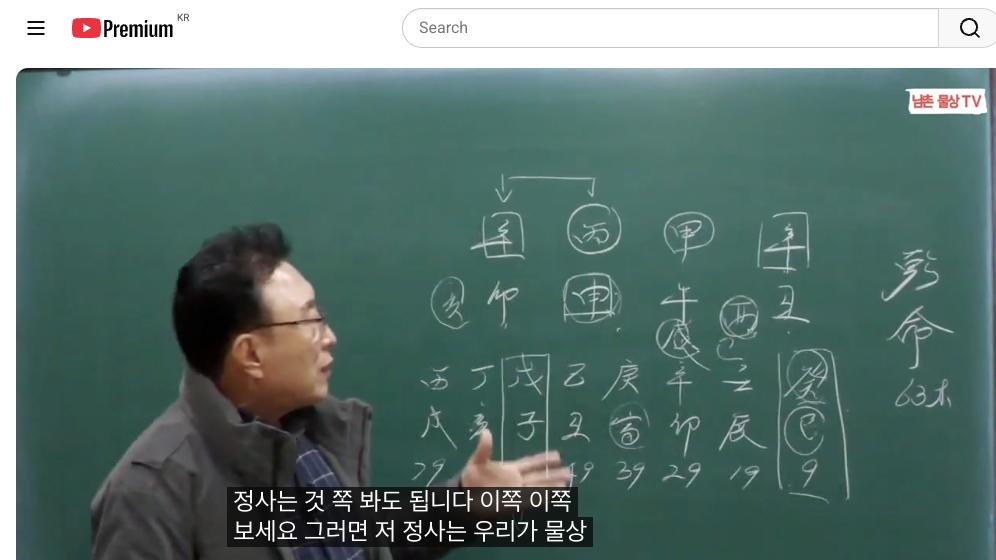
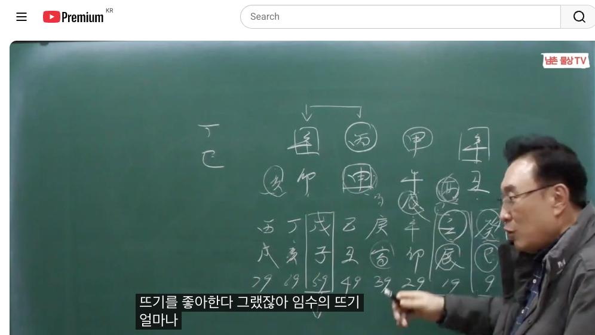
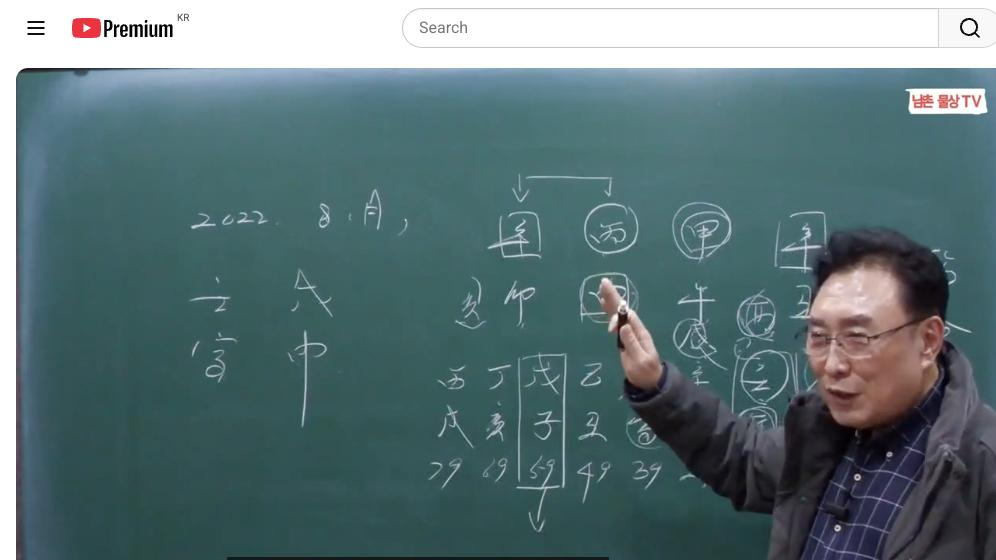

남촌물상TV 전체 문서 › 동영상 V0023
[실전사례]7로또 1등 당첨된 행운의 벼락부자 사주, 이번엔 내 차례?

| 문서 번호 | V0023 (동영상) |
|---|---|
| 영상 URL | https://www.youtube.com/watch?v=qC4FgWB7kLw |
| 영상 ID | qC4FgWB7kLw |
| 게시일 | 2023-11-16 |
| 길이 | 26:47 (1607초) |
| 조회수 | 9,055회 (수집 시점 기준) |
| 카테고리 | People & Blogs |
| 자막 | ko (자동생성) |
| 수집 시각 | 2026-08-30 17:03 (KST) |
영상 설명 (YouTube 설명 원문 그대로)
22억 로또 1등 복권 당첨, 사주에 이것 있었다 #로또 #복권당첨금 #로또1등
전체 자막 (550구간 · 타임스탬프 클릭 시 해당 장면으로 이동)
[0:01][음악]
[0:04]자 지난 시간에 이제 제가 공표한
[0:07]대로 어 복권에 당첨된 사주가 어떤
[0:10]사람이 당첨이 됐을까이 굉장히
[0:13]궁금합니다 모든 제가 유튜브를 검색해
[0:16]봐도 실질적으로 당첨된 사주를 가지고
[0:20]올려진 명조가
[0:21]없어요음 근데 이거는 제 집안 동생
[0:24]사주기 때문에 정확한
[0:28]근거해서 확실한 당첨된 사주입니다
[0:32]그럼이 사주이 사람 이제 우리가 볼
[0:35]때 이것 뭐 때문에 당선이 됐겠는가
[0:37]이제 이런 궁금증을 유발한 것을
[0:40]차근차근 풀어서 해 드리겠습니다 그럼
[0:43]보통 저들이 그 공부할 때 일단
[0:46]학술상 해석을 하고 당첨된 이유부터
[0:49]당첨되 어떻게 당첨이 되겠는가
[0:52]차근차근 설명을 드리겠다 그
[0:54]말입니다 자 63세 남자인데 신축
[0:58]갑보
[0:59]다 자 그러면이 사주들이 쭉
[1:03]보면은 그까 없는게 뭔가를 먼저 보라
[1:06]그랬잖아요 자 뭐가
[1:07]없어요 자 물이 없다 자 수가 없다는
[1:11]얘기는 어떤 걸까요 병화의 뭐예요
[1:15]관이죠 자 그럼 무관 사주다 그렇죠
[1:21]무관사주 자 무관
[1:24]사주다 근데 이제이 사주 특성상
[1:27]보면은 또 약한 부분이 또 있어요
[1:31]그럼 재는 많죠 자 병화
[1:35]일간에 재는 여기도 있고 여기도 있고
[1:40]자 그다음에 지지에 재를 깔고 있다
[1:43]자 이렇게 보시면 나 그림이 확실하죠
[1:48]그러면 재는
[1:51]많은데 물이 없다 그럼 자
[1:54]우리는 조건을 한번 얘기했어요 병화는
[1:57]어디 뜨기를 좋아한다 임수 다 어디서
[2:00]놀 좋와해 물요 근데 물이 없어 이게
[2:04]근본 핵심이에요 그러이 사람 반드시
[2:08]필요한게 뭐예요
[2:10]물이다 자 그렇다고 봤을 때 그러면
[2:13]이제 병화
[2:15]일간이 물을 만드는 것은 어디서
[2:18]만들까요 하는 것도 되잖아요 그렇죠
[2:21]자 그러면 내가 합을 해서 만들어야
[2:25]되는데 우리 물상론 원칙이 있어서
[2:28]2대 1 하은 돼요 안 돼요 안된 안
[2:32]된다 그러면 돈이 될까요 안
[2:35]될까요 자 안 되죠 자 이런 거
[2:38]보면이 사람의 이제 특성상 사주에
[2:42]물이 가장 필요한 사람이다 그러면 자
[2:45]우리는 물을 없을 때 만드는 방법이
[2:49]있고요 또 없어 끌어다서는 방법
[2:52]있잖아요 근데
[2:54]천간에 끌어다 쓰려고 들면은 내가
[2:57]희생을 해야 물이 된다 그 말이죠
[3:00]무슨 얘기냐 예를 들어서 합수
[3:04]된다는 얘기는 내가 희생에서 물을
[3:07]만드는 거예요 물이 그냥 오는 것은
[3:10]운에서 내 관이 오는 거지만 이거는
[3:14]내가 희생에서 물을 만든다고 해야죠
[3:17]그죠 나하고 합을 해서 내가 만든다
[3:19]그 말이에요 그러면 내
[3:21]근본적인 나의 병화의 성향이 뭘로
[3:24]바뀌어 정화의기로 바뀌고 산다 이렇게
[3:27]되는 거예요 그런데이 사람은 현재
[3:29]지금 저 뭐야 아 합이 안 되고
[3:32]있어요 그죠 자
[3:35]그러면 그럼 합을 그럼 물을 바로
[3:38]만들 수 있는 방법은
[3:40]뭘까 금생수 하면 물이 되죠 그죠 자
[3:44]그러면 이제 여기서 이제 우리가 한번
[3:46]그어 물에 대한 원인을 분석해 보자
[3:49]물을 끌어온 방법은 지지로 뭐가
[3:51]있어요 신 자 신자진 있고 또 해명이
[3:55]있죠 여기 해수가 있잖아요 자 해명이
[3:59]있고
[4:00]또 사유에 금을 쓰면 금수도 돼요
[4:03]되죠 여기에 유금을 쓴다는
[4:08]얘기는 사축을 하게 되면 금생 수하고
[4:11]물이 된다 얘기죠 자 이런 것을 쭉
[4:14]저희들이 그 관찰해보면 쉽게 쉽게 볼
[4:17]수 있다는 얘기예요
[4:18]자 그러니까 얼른 생각할 때 얼른
[4:21]생각할
[4:22]때 저희들이이 쉬운 관법을 가장 쉽게
[4:26]이해하는
[4:28]방법은 본이 를 취할 수가 있지만
[4:33]있지만 취하게 되면 합이 되죠 간에는
[4:36]그죠 법 내가 합을 하게 되면 취하게
[4:40]되면 병 합수를 바뀐다 얘기예요
[4:42]그래서 실질적인 신금이 있어도 병화
[4:45]일간은 재물을 직접 취하기는 어렵다
[4:48]그러면 자 우리는 집계에서 어떤
[4:50]경우를 얘기하냐 합부 했을
[4:52]경우는 자격증을 유발한 걸로 돼 있단
[4:55]말이에요 자격증을 만드는 것이다 그럼
[4:57]2대 1 원구 합이 안 되기 때문에
[4:59]그냥 재물만 나타나 있는 거지
[5:01]실질적인 재물은 아니다이 말이에요 자
[5:05]그러면 여기서 제에 중요한 것은 자
[5:09]병화는 임수해 뜨기를 좋아해 금은
[5:13]물에서 놀기를 좋아해 근데 물이라는
[5:15]자체가 없기 때문에이 사람은 반드시
[5:18]뭐가 필요해 물이 필요하는 사람이다
[5:21]이거예요 그럼 우리가 아 살아
[5:24]나가는데 어 뭐 행위를 할 거냐 물에
[5:28]행위를 물에 가서 행위하는게 좋겠죠
[5:32]그러니까 실질적으로 뭐가 사주에 제일
[5:34]필요한 원인을 봐봐야 돼 자 그러면
[5:37]직업상 한번 판단해 보자 우리 제가
[5:40]제재 관한법이 사람이 어떤 행위를
[5:43]하면 좋을 것인가 이걸 이제 저희가
[5:45]강의를 한 제가 우리 많이 해
[5:46]줬잖아요 자
[5:48]그러면 자 병화의 관이
[5:52]뭐예요 물이죠 자 수가
[5:55]없어요 수의 관은 뭐예요 죠가 축토
[6:00]밖에 없죠
[6:02]축도예문 자 물이 없단 얘기는 지금
[6:06]모든 원인은 물이 필요하는 사람이
[6:07]했어요 없다는 얘기는 저 축토와
[6:10]만드는 거예요 그죠 사유 축에서 금이
[6:15]되면은 맞는 거고 그죠 자 그럼
[6:18]여기서 이제 한 가지 더 조금 어
[6:20]이해 침을 더 깊게 나간다고 하면
[6:22]어떻게 나갈
[6:23]것이냐 자 병 5는 뭐예요 인호
[6:27]술이죠 술토가 있죠 그럼이 술토가
[6:29]한번 써 봐야 돼 술토 어마 자 술토
[6:32]썼단 말이에요 자 술토
[6:37]썼는데 술토 썼으면 우리가 어떤
[6:40]어떤게 나올까요 술토
[6:42]썼으면 뭐가 됐어요 신 신유술
[6:46]됐잖아요
[6:48]그죠 그러니까이이 사주 자체가 신
[6:52]유술이 될 때 금국이 되는 거야 자
[6:55]지지로 재물은 누구 거라 다 내거다
[6:59]자 그러면 이 사람이 제일 행운의
[7:01]숫자를만을 때는 기본적인 술토가 올
[7:06]때냐 이게 축가 축의 사축이 될 때냐
[7:11]핵심은 거기 있는 거예요 그러니까
[7:14]이런 사주들은 쉽게에서 가장 필요한
[7:17]것이 물었는데 관 관으로 쓰다 보니까
[7:20]자 수국화 물이 없어요 자 그럼 물이
[7:28]없어해서
[7:29]까야 관의 관으로 갔을 때 관의 관
[7:33]축토 뭐 토란 말이에요 사이 축에서
[7:36]물을 만들어 그럼지가 하는 행위라
[7:38]뭐겠어요 유구 행이라 하겠죠 이게
[7:41]직업이지 간단해 직업 찾는게 자 거꾸
[7:44]넣 제 관법을 한번가 볼까요 제관법
[7:47]자 그럼 재 병화의 재는 뭐예요 자
[7:51]그럼요 신금이 나와 있는 대로 쓰자고
[7:54]밑 밑으로 써고
[7:56]행동으로 어쨌든 신금 되고 됩니다 또
[8:01]신금이 제는 뭐예요
[8:03]목이 자 목이면 저 갑목이
[8:09]자 그러 제로 갈 것이냐 예를 들어서
[8:13]우리가 뭐 목으로 갈 거냐
[8:17]그죠 이거 따져 놓고 보면은 제관법
[8:21]보면 여러분들이이 어느 쪽이 유리라고
[8:23]했어요 자 제로
[8:25]가니까이 제하고 어떤 관계 있을까요
[8:27]자 금에서 제로는 어떤 의미가 가지고
[8:31]있을까요 아니 이거 뭐가 하고 관계를
[8:34]얘기해야지 뭐가 관계를 창으로라고
[8:38]그랬잖아 창으로 창을 가진 사람은
[8:42]나는 칼 나를 쓴다는 얘기예요
[8:43]그러니까 소지 조직생활을 하는
[8:46]사람으로 봐야 된다 그럼 너는 무슨
[8:48]금의 조직생활 하라 얘기예요 그이
[8:50]뿌리는 뭐예요
[8:52]유금이 신금 유이 아까 여기 축에서
[8:55]유 나왔어 안 나왔어 똑같다 그 너의
[8:57]직업은 기술적인 요인을 가진 직업을
[8:59]갖는게 좋다 딱 답이 정해진 거예요
[9:02]그 직업을 쉽게 찾잖아요 그니까 직업
[9:05]찾는 방법이 그럼 어떤 직업 이거
[9:08]있죠 어떤 직업 유금이 뭐예요
[9:10]첫째 자 먹는 거 또 손기술 또 it
[9:15]이런 계통에 다 기술적인 요인을
[9:17]가지고 있는 사람이에요 그러니까이
[9:21]사람이이 어떤 이유에서든간에 직업은
[9:25]유금을 쓰는 직업이 확실하다 이거예요
[9:28]답이 자 이게 답 나온 거예요 답이
[9:31]정리 됐죠 자
[9:33]그러면 자 이런 사주가 이제 학술
[9:36]상으로 해석을
[9:38]보면은
[9:40]어 쉽게 답은 다 찾아 난
[9:43]거예요음 그래서이이 사주 자체가
[9:46]행운의 복권 1등 당첨에 돼서
[9:49]22억에 거금을 자로 잡는 당첨자
[9:52]사주다이
[9:54]말이에요 그러니까 지금 제가 아까도
[9:57]처음에
[9:58]얘기하듯이이 조건 당선된 사람은 다
[10:00]자기를 은폐하지 자기를 다 숨기고 안
[10:03]해요 어 근데 이제 이건 확실한 제
[10:06]집안 동생이 당첨됐기 때문에이 사주를
[10:09]공개적으로 제가 풀어 드린 거예요 자
[10:12]그러면 지금까지 이제 원곡을 제가
[10:15]설명을
[10:17]드리면 지지로 오는 재물은 다
[10:20]누구거다 다
[10:22]내거다 뭐 어 간이가 상관없어요 자
[10:27]그러면 아까 축의 금은 나의 재물 노
[10:32]술은 노 술토 그다음에 신자이 될 거
[10:35]아닙니까 그죠 신급 있어 신은 원칙
[10:37]있는 거예요 그럼 잘
[10:40]보세요 호술 된 운이 온다면 때
[10:44]온다면 어떤 일이 생길 거고 호순이
[10:46]된다면 바로 술토가 끼면 뿌리가
[10:51]안나죠 신금의 뿌리가 존재한다 말이요
[10:53]유금이 된단 말이에요 그럼 신수이 돼
[10:55]아 이때부터 네가 뭔가 좀 경제적인
[10:58]능력이 좋겠네 여기 시작이 된 거예요
[11:00]자 그러면이 상태에서 이제 우리는
[11:04]원국 다 해석이 된 거예요 자
[11:07]그리고 지금 그이 사람 최종 직업이
[11:11]제가 그 우리 유인물 쓰다시피 직업은
[11:14]선원이 배탄
[11:16]사람이야 그럼 자 예 물이 없으니까
[11:20]뭐 있겠어요 베타로
[11:22]생겼겠죠 어 그래서 이제 목포에서
[11:24]배도 타고 어선도 하고 어항이 그
[11:27]교이 이런 일만 한 거예요
[11:30]자 그러면 우리가 배를 탄다 했을
[11:33]때 어느 때 하선할
[11:37]것인가 자 물 기다가 물에 기다가
[11:41]토이
[11:43]오면 그때 이제 손들고 나 육지로 갈
[11:45]거야 하고 내린다이 말이죠 하산하는
[11:48]기점은 토다 답이 나온 거죠 자
[11:51]그래서 이제 이런 구체적인 그를
[11:54]가지고 원국 해서를 제가 설명을
[11:57]드렸는데 원해 장 핵심적으로 질문
[12:00]있는 사람 한 번만 얘기해보세요
[12:01]질문할
[12:04]영국에서 한번 의심이 가는
[12:08]거 없어요 그래도 괜찮습니다 뭐해도
[12:12]괜찮아요 국에서 예 질문하고 싶은 거
[12:17]아니 얘기는 다 들었는데 원국에서 저
[12:21]궁금한
[12:22]거예요 인신 사도 가능한가요서 아
[12:26]가능하죠 자 인신사 라는 것은 사유축
[12:31]사를 쓸 수 있고 신인과 사가 있고
[12:34]여기는 해수를 끌고 있잖아요 그 신사
[12:36]이게 활동하는 사람 그러니까 자 그
[12:40]바다에서 일을 하던 사람이 그냥 집에
[12:42]있겠어요 활동하지 그 신세 개연성을
[12:45]가지고 있다 그 인신 사회 개념도
[12:48]정의식 인신 사회가 있는 사람 어떤
[12:50]개혁적인 일을 하지만 이런 사람들은
[12:53]끌어다 쓰는 인신 사이는 본인이 하고
[12:57]싶어 하는게 아니라 자기 환경에 에
[12:59]따라서 활동을 할 수밖에 없다 그런
[13:01]이론이 성립이 되는
[13:04]거예요구나네 예 그다음에 또 먹고
[13:06]싶은 거 없어요 자 없으면 이제 그
[13:10]어 대운을 한번 한번 봅시다이 사람
[13:13]어렸을 때 어떻게 컸겠다이 간단합니다
[13:15]어렸을 때 클
[13:17]때 자 여기서 보면은 관이 없죠 우리
[13:21]사주에 관이 없다는
[13:23]얘기는 관도 아버지도 나 같은 똑같은
[13:27]남자 남자 관이에요 자 그러면 여자
[13:30]입장에서 봐도 관은 남편이고 아버지요
[13:34]근데 저희 물상에는 관도 아버지는
[13:36]아버지 봐야 돼 괜찮습니다 똑같아요
[13:38]자 그러면 관이
[13:40]없죠 그죠 사주 물이 없다 얘기예요
[13:43]그럼 아버지의
[13:46]대한 도움이 있었겠냐 없었겠냐 그
[13:49]말이에요 없었다 없었다 그 아버지의
[13:53]능력이 잘 안 된 사람 중에 하나예요
[13:55]어렸을 때 제가이 저 집안이니 제가
[13:58]잘 아는데
[14:00]에 제 이제 아재 빨도 했죠 그
[14:02]양반은 근데 그분은 그 별로 그렇게
[14:07]나타나지 않고 술이나 먹고 뭐어 좀
[14:10]작게 늦겠다 할까 그런 스타일로 그
[14:13]세상을 보내신
[14:14]분인데에 좀 일찍하지 버지 그래서
[14:18]아버지의 능력은 없다 자
[14:22]그러면 어머니의 능력은 있겠느냐
[14:25]어머니 자 어머니는 우리가 뭐라
[14:28]그래요 인성 자 다른 데는 편인 정인
[14:31]다 우 그 따게 없어요 무조건 인성이
[14:33]맞아요 자 그러면 청관 이주기 때문에
[14:36]목이 기었다 보자 그 말이에요 그럼
[14:39]자 목이라는 것이 하게 되면은 엄마가
[14:43]그래도 모든 것은 입 주관 엄마의
[14:45]주관에 소 가이 엄마한테 있었구나를
[14:48]알 수가 있는 거예요 엄마 뿌리가
[14:50]여기 있잖아요 어 근데 여기서 한가지
[14:53]이제 캐치해서 제가 다어 팁을
[14:56]드리자면 인성이나 인성이 천간 쉬
[15:01]있을 때는 엄마가 오래 산 사람이에요
[15:03]한번 여러분 검증해 보세요 잘
[15:05]해보시면 답합니다 오늘 새로운 팁을
[15:07]드립니다
[15:09]자지지 있는 건 아닙니다 천간의
[15:13]인성이 여기 있을 경우는 엄마가 거의
[15:16]듣기까지 살아요 이건 내가 검증한
[15:20]제가 3만 8천명 이상 검정해 본
[15:22]결과 답은 확실하다 그런 걸
[15:24]이용하시면 돼요 자 그러면 열을 때가
[15:27]지금 이유가 아닙니까요
[15:29]자이 우리가 초년에 이제 초등학교
[15:32]중고등학교 다닐 때 있대요 그러면
[15:35]자이 계수가 왔을 때는
[15:37]어떤느냐 자 아버지 자 관이었다
[15:41]말이에요 피가 태양을 가지는 형이니까
[15:44]어렸을 때 부모 아버지가 어떤
[15:46]사람이었어 나한테 성장을 아주 내
[15:50]본래 밝은이 태양을 어둡게 만드는
[15:53]아버지였다 답이 간단히 나오잖아요 자
[15:55]그러면이 사라는 건
[15:58]뭐겠냐지지 사유축 아니에요 아 나는
[16:00]일찍 돈을 벌어야겠다 생각 이게 이제
[16:02]우리 물사 가장 쉬운 방법 그러면
[16:04]얘는 어떻게 생각해 어렸을 때부터 나
[16:07]일찍 돈 벌러 가야 돼 이게
[16:10]근본이요 자 그러면 자 우리가 이제
[16:14]나는 일찍 가서 유금의 사회적 손
[16:16]기술이나 어떤 기술적인 영서 돈을
[16:18]벌어 있구나 이런 생각을 가질 수
[16:20]있다 이런
[16:21]얘기죠 자 그러면 핵심적으로 보면은이
[16:25]사람의 한번 볼까요 그 어느 때 어떤
[16:28]과정이 겪었는가
[16:32]자 계사 대운에 계사 대운에 여기
[16:38]보면은
[16:40]초등학교에에 그 시절을 보거나 여러가
[16:42]봐보세요 그럼 중 중학교 갈때 정사
[16:46]사예 정사 중학교 우리가 보면 중학교
[16:50]졸업할 때가 그 등학교 학 때가 정사
[16:53]아니에요 그러면 어떤 스타일로 봐야
[16:56]될 거냐 그 말이야 우리가 자 그 저
[16:58]정사는 것 쪽 봐도 됩니다 이쪽 이쪽
[17:00]보세요 그러면 저 정사는 우리가 물상
[17:04]론에서 총이 왔어요 여기가 정사라고
[17:06]봐요 자
[17:13]정사다시 자 평화 있죠 정사가 왔어
[17:16]그럼 우리는 태양과 달을 부유했던
[17:19]뭐라고
[17:20]했다 현실과 이상의 갈등 보여지는
[17:23]세상과 보이지 않는 세상 해서 현실과
[17:26]이상의 갈등 어렸을 때부터 느끼고
[17:28]사는 사람이다 볼 수 있죠 그러니까
[17:30]학교 갈 때 굉장히 고민을 많이
[17:33]했겠죠 내가 고등학교를 가야 돼
[17:34]말해야 돼 했을 때 문제가 돼
[17:37]그러면 유축에 4라는이 글씨는 4가
[17:42]끼게 되면 인신 사이 돼 안 돼요
[17:44]되죠 돼요 안 돼요 됩니다 그러면이
[17:48]사람은 돈을 벌기 위해서 고향을
[17:51]일찍가 떠나야 되겠다대 대학 고등학교
[17:54]가가 못
[17:55]가지이 사람은 고등학교 못 간
[17:57]사람입니다 그래서 중절 출신으로 끝난
[18:01]사람이에요 그런 거 보시면 그 제가
[18:03]유인물 좀 드렸는데 읽어보시면 답은
[18:06]다 정해져 있어요 그러니까 지금 이제
[18:10]그런 과정을 보시고 어 우리는 이제
[18:13]학생들 진료 상담할 때도 어제도 제가
[18:15]이제 저어 진료 상담을 하고 두 시간
[18:18]했습니다 제가 진료 상담하라고
[18:20]고등학교 2학년 학생을 부모님
[18:24][음악]
[18:26]오셨는데음대 엄마들의 생이 뭐 지나친
[18:29]경우가 많
[18:30]있어요음 엄마들은 항시 뭐냐면 어
[18:34]모든 것을 학생 수험생들의 관장을
[18:37]하려고 그래 막 오늘 좀 수능시 모는
[18:39]날이죠 어 엄마는 뭐든지 잘하면
[18:41]하나없이 잘하는게 엄마예요 그게
[18:44]문제야 근데 걔가 밝은 했는데 밝지
[18:47]못하고 사는 이유가 약간 우울증도
[18:49]생겨 병정 갈등 사주인데 그럼 그런
[18:51]사람들이 어떤 경우가 있냐면 엄마가
[18:54]인성일 경우에 무토일주 있어요 그럼
[18:57]그러면 엄마의 지나침 간섭이 심하다
[19:00]보면 아기 자체가 어렸을 때 엄마
[19:03]하란대로 따라가 근데 이제 고등학교
[19:05]2학년 쯤 되면 자기 얘기를 노출하지
[19:08]그래서 소위 안 되는 거예요 우리는
[19:12]항시 제가 얘기 합니다만 엄마들이
[19:15]지나친 간섭으로 인해서 문제가 될
[19:17]때는 어떤 처지를 해 줄까 제가 안심
[19:20]법이 쓴다고 그랬잖아요 그 마음한테
[19:23]첫째 어 학생들이 제일 좋은 얘기를
[19:26]못 얘기가 좋겠어요 엄마들이 한
[19:28]얘기가
[19:30]아들한테
[19:32]뭐랄까요 고마워 엄마 고맙다 또 엄마
[19:38]그렇지 나는 내 아들 너 믿어 이거
[19:41]최고야 여러분 상담 하시다 보면 그런
[19:43]경유가 걸려야 진로 상담보다 나는 너
[19:47]내 아들 믿어 이거 한마디면 끝나는
[19:50]거예요 그걸 가지고 공부 잘해라
[19:52]뭐해라 계속 잔소리 이번 수능 시험에
[19:55]예를 들어서 내가 그 저 모의고사에
[19:57]0어 이다면 야 90점 맞아야지
[20:01]90점 맞으면 100점 맞아야이 계속
[20:02]올라가 제가 이제 저는 그 세슬 학교
[20:05]보내 봐서 강남에 학교 제가 잘합니다
[20:08]근데 첫째 얘기에요 첫째 얘기
[20:10]더군다나 첫째 한테는 커트라인 80점
[20:13]맞지 80점 살다 집어넣 봅니다 그냥
[20:15]100%
[20:17]떨어져 거의 시험의 출제를 보면은
[20:20]성향의 10% 하향 지역을 한번 더
[20:22]합격 다해요 근데 대부분이 봤을 때
[20:24]어떤 현상이 오느냐 대는 무조건 점만
[20:28]90점 커트라 90점 서울대학교
[20:30]서울대학교 다 집어넣습니다 다
[20:32]떨어져요 저도 해봤으니까 아 우리
[20:35]큰애가 단 대보고 다니거든데 근데
[20:37]100%
[20:38]재수했는데 수치가 어나면 그런다 이런
[20:41]현상을 볼 수 있는 거예요 자 근데
[20:43]마찬가지로 이제 왜 그 얘기를 하냐면
[20:44]오늘 수능 수능 날이기 때문에 얘기한
[20:46]겁니다 어 그 엄마들은 너무
[20:48]학생들한테 지나친 그 욕심을 부리지
[20:51]마라 내 아들 믿어 이게 최고야 그걸
[20:54]하시면 된다 자
[20:57]그다음에 자 자 임진 임진 대훈이가
[21:00]어쩌 었습니까 자 임진 대훈이 자
[21:03]임진 대운은 무료죠 그죠 음론
[21:06]무리와서 얼마나 좋아요 자 그리고
[21:10]부부 공해 신자진 개헌 속으로 합을
[21:13]할 수가 있어요 없어요 있어 있죠 아
[21:15]그럼 이때 결혼도 하겠네 간단하지
[21:18]않아요
[21:19]그러면 임수가 무리에 뜰 때 임수의
[21:23]태양은 뭐가 좋다 그 병화는 임수의
[21:25]뜨기를 좋아한다 그랬잖아 임수의 뜨기
[21:27]얼마나 좋아해요 지지에 합이
[21:30]이루어졌다고 생각하면 결혼 시기가
[21:32]좋을 것이다 그때 놓고 이제
[21:33]여러분들은 횟수를 뒤집어서 어느 때
[21:36]결혼하면 좋다라고 얘기해 주면
[21:38]되는거다 그렇지 확실하지 우리 저 저
[21:41]우리이 선생님이 아주 정확하게 답을
[21:45]줬는데이이이 한번 보실까요음
[21:50]보면음 자 무진 대운의 왔죠 무진대운
[21:55]그렇죠 자 어느 우리가 그 무진
[21:59]대운이 어떤 거 나타날까요 무진
[22:02]28이 무진이 자
[22:05]무진은이 예측한 대로 대운에서 항시
[22:10]어느 연도에 거기에 적중할 것인가를
[22:13]예측해 주고 대원이라고 그어요 10년
[22:15]동안에이 10년
[22:17]동안에 19살 때부터 28살 사이에
[22:21]어떤 현상이 일어날 것인가를 예측해
[22:24]준게 대원이다이 말이야 그럼 그것을
[22:26]가지고 세월에 대축시면 되는 거예요
[22:28]어느 시점에 좋겠느냐 그러면 무토가
[22:32]온다는 얘기는 무슨
[22:34]얘기일까요 자 갑목이
[22:37]갑목이 나무를 심어진다 얘기죠 그럼
[22:41]갑목이 심어진다 얘기는 호실이 될 수
[22:44]있다는 얘기예요 그럼 뭐가까 신유술
[22:47]유 다 되는 거예요 그게 부부이 합이
[22:50]이루어지기 때문에 방하로 이루어진
[22:52]것은 그 마누가 들어오면 그때부터
[22:54]재물이 늘어난 집안이네요 뭔지
[22:57]아시겠어요 당으로 일어난 것은 이혼도
[23:01]안해 합의된 것은 왜 30년
[23:05]짜리니까 근데 대부분 이제 올해 했으
[23:08]하나만 좋은 거다면 할 수 있죠 근데
[23:10]이제 운이 방으로이 30년 가기
[23:13]때문에 거의 이혼 안한 걸로 보면
[23:15]된다 자 이렇게 보시는 거 돼요
[23:17]그래서 결혼은 그때가 좋다 이렇게
[23:19]하는 거고 자 그럼 이제 지금부터
[23:22]핵심적으로 어 복권이 언제 당첨되고
[23:26]언제 했겠는가 이거 제가 얘기입니다
[23:29]그래서 이제 복권 당첨 얘기를 할
[23:32]건데 복권이 왜 당첨됐을 하는게 그
[23:35]이유죠 우리는 왜 이것 때문에
[23:38]당첨됐고 하는게 자 그러면 복권
[23:40]당첨될 때가
[23:42]2 0 22년 8월 달에 조건이
[23:46]당첨됐습니다 두 번째 주에 자 그런데
[23:50]22년도 어떤 년도에 미년이 그렇죠
[23:54]인년 맞죠 자 인년 8월 달에 무슨
[23:58]달 무자 달이죠 무자 맞아요 맞아요
[24:02]안 맞아요 대답 크게 봐야지 때요
[24:04]무심 무심 무신 다이야 그래 그
[24:08]물어보니까 아 봐 틀렸는데도 보라고
[24:11]안내가 해보니까 역시 대답이야 알고만
[24:14]제 무신 달이었어요
[24:15]무신에 변화가 히 많았 자
[24:19]그러면 자 이런 사람들이이 아까 제가
[24:22]분명히 설명을
[24:24]드렸어요 병화는 어디에 뜨기를 좋아해
[24:28]자 임수의 뜨기로 줬다 자 내의
[24:30]명예를 가질 수가 있고 그다음에
[24:33]인이라는 것이 뭘
[24:35]예측한다 인수 자 호수를 예측할 거
[24:38]아니에요 그러면 여기에 술토가 붙어
[24:40]한 붙어 딱 붙으 있아요 이게 이걸
[24:43]잘 봐야 돼요 우이 어느 때 내가 그
[24:46]되겠는가 안 되겠는가 그러면 여기에
[24:48]술토가 붙어요 자 술토가 붙어
[24:52]이때는 자동으로 뭐가 올까요 유금이
[24:55]따르는 거예요 아 뿌리가 있으니까
[24:59]유금이 돼 그럼 신수이 돼 안 돼요
[25:02]되죠 확실하게 좋다야 그러면 무토는이
[25:08]핵심이 하나 그다음에 임수라 개념이
[25:12]하나예요
[25:13]그래서이 여기에 대한 인민 연이
[25:17]이한테는 너무나도 좋은저 연이다이
[25:21]말이에요 새끼
[25:24]얘기해서 대운에서 우리가 모두 예측하
[25:27]무자 자 대운 아니에요 그러니까
[25:31]예측한데 무자 월래 걸렸죠 그럼
[25:33]신자진 돼 안 돼요 재지 재문이 다
[25:36]걸려요 그러니까 우리가이
[25:38]대운을 10년 동안에 세운에서 이르는
[25:42]것과 월운 아지도 볼 줄 아는
[25:44]스타일이대 주한다이 말이에요 그러니까
[25:47]이거 안 보더라도 안 보더라도 여기서
[25:50]이노 이사주 이노 술만 되면 신수이
[25:52]되는 거야 그죠 그러니까이 이민 이민
[25:57]연이 한테는 행운의 연라 볼 수 있는
[26:01]거야 그래서 이것 바로 이것 때문에이
[26:04]사람은 그때 당첨이 22억이 복권이
[26:08]당첨이 된 거예요 무가 심어지고 꽃이
[26:11]피고 당도 들어오고 다들 다 거지 다
[26:14]조성이 다되 이사주 구성이 다
[26:15]떨어지는 거야 나무위에 꽃도피고
[26:18]나무가 땅에 심어지고이 물이 와서
[26:21]나의 명예를 주고 전체 모든 구성이
[26:24]다 이루어질 때 당성이 됐다는 것을
[26:27]알 수가 있다 이것이 바로 22억에
[26:30]행운의 당첨 복권에 당첨된 명적 그때
[26:33]시점이이 시점이 있다는 걸 알 수가
[26:35]바로 이것이
[26:37]문제다
[26:38]이해하셨죠네 그래서 이분은 이렇게
[26:41]202년 당첨을 크나큰 돈을 검어지게
[26:44]됐다라고 합니다
칠판 원국 판독 (영상 프레임을 AI가 시각 판독 · 원판 대조 필수)
坤造
천간
癸
천간
丙
천간
甲
천간
丙
지지
巳
지지
申
지지
午
지지
丑
판독 신뢰도: 중간
판독 노트: 여성 명식(우측 세로 '坤命 女子'). 판 구성: 丙丑年 癸巳月 丙申日 甲午時(대운 첫 항 癸巳9와 월건·시주 역검증 일치). 역행 대운 癸巳9 壬辰19 辛卯29 庚寅39 己丑49 戊子59(박스) 丁亥69 丙戌79, 상단 끌어옴 화살표 주석 · 시점 17:02 · 해당 장면 보기↗
坤造
천간
癸
천간
丙
천간
甲
천간
丙
지지
巳
지지
申
지지
午
지지
丑
판독 신뢰도: 중간
판독 노트: 동일 판 선명. 丁亥 상단 주석 추가. 대운 숫자 확실: 79 69 59 49 39 29 19 9 · 시점 21:27 · 해당 장면 보기↗
坤造
천간
癸
천간
丙
천간
甲
천간
丙
지지
巳
지지
申
지지
午
지지
丑
판독 신뢰도: 중간
판독 노트: 동일 판+좌측에 '2022. 8월'과 壬·寅 세운 표기 추가(壬寅년 운세 해설). '암중(暗壬) 59 대운' 화살표 강조 · 시점 24:28 · 해당 장면 보기↗
자막은 YouTube에서 제공하는 한국어 자동음성인식(ASR) 트랙의 원문입니다. 고유명사·한자 용어·숫자 표기에 자동인식 특유의 오류가 있을 수 있어, 원문을 가능한 한 그대로 보존했습니다. 위에 칠판 원국 판독 섹션이 있는 영상은 화면 프레임을 AI가 시각 판독한 것으로 신뢰도 표기를 확인하고, 없는 영상은 화면 도표가 문서에 포함되지 않습니다.